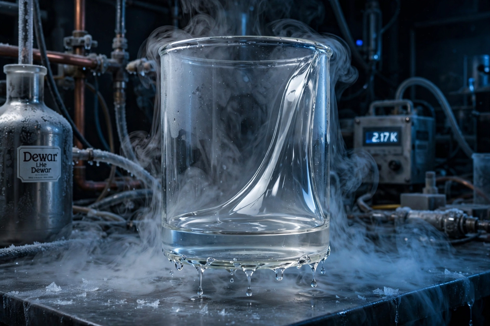

Superfluidity

[Image: Photograph of superfluid helium creeping up the walls of a cup and dripping from the bottom]Superfluidity is the characteristic property of a liquid with zero viscosity, which therefore flows without loss of kinetic energy. Discovered in liquid helium-4 below 2.17 K (the lambda point) by Pyotr Kapitsa and, independently, John Allen and Don Misener in 1937–38, superfluidity is a macroscopic quantum phenomenon: a finite fraction of the liquid condenses into a single quantum state — a relative of the Bose–Einstein condensate — described by Fritz London's theory and Lev Landau's two-fluid model.
A superfluid exhibits startling behaviour: it flows through capillaries too fine for ordinary liquids, climbs container walls in a thin film, supports persistent currents that circulate indefinitely, has effectively infinite thermal conductivity (heat travels as 'second sound' waves), and quantises rotation into vortex lines. Helium-3 becomes superfluid only below ~2.5 mK and via Cooper pairing of its fermionic atoms — making it the neutral analogue of Superconductivity, with exotic phases used to model everything from neutron-star interiors to the early universe.
Two-fluid model
Landau's model treats the liquid as a mixture of a superfluid component (zero entropy, zero viscosity) and a normal component carrying all the heat and viscosity; their ratio varies with temperature, vanishing at the lambda point. Kapitsa received the 1978 Nobel Prize; Landau the 1962 prize; the helium-3 discoveries (1972) were recognised in 1996, its theory (Anthony Leggett) in 2003. Superfluid helium remains the standard coolant for superconducting magnets, space telescopes and particle detectors.